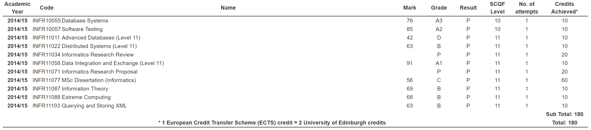

This is Fu Xiaotong.
2016 - Data Engineer in ANZ, doing data engineering, business reporting, market analysis.
2016 - Intern as a Project Manager Assistant in Simu-Tech, helping Cloud Center Building plan .
2015 - Master of SCience Degree in Advanced Data Management from The University of Edinburgh .
2013 - Bachelor's degree in MIS from CQUPT .
2007 - start to touch coding when attend NOIP .
[close]
NOIP：全国青少年信息学奥林匹克联赛(National Olympiad in Informatics in Provinces简称NOIP)自1995年至今。每年由中国计算机学会统一组织。 NOIP在 同一时间、不同地点以各省市为单位由特派员组织。全国统一大纲、统一试卷。初、高中或其他中等专业学校的学生可报名参加联赛。联赛分初赛和复赛 两个阶段。初赛考察通用和实用的计算机科学知识，以笔试为主。复赛为程序设计，须在计算机上调试完成。参加初赛者须达到一定分数线后才有资格参加复赛。联 赛分普及组和提高组两个组别，难度不同，分别面向初中和高中阶段的学生。获得提高组复赛一等奖的选手即可免试由大学直接录取。
http://www.noi.cn/about/summary
[close]
重庆邮电大学创办于1950年，是工业和信息化部与重庆市共建的一所教学研究型大学，也集军事、民用相结合，以信息科学技术为特色的省部共建重点高校，被誉为"中国信息通信人才的摇篮"。重庆邮电大学入选国家"中西部高校基础能力建设工程"，国家"卓越工程师教育培养计划"建设高校、国家高技术产业化示范工程基地 、全国大学生文化素质教育基地。
重邮曾开发出第一个符合国际标准的脉冲编码设备而被称为中国"数字通信发源地"。2003年起先后完成TD-SCDMA中通信协议、芯片、应用平台和中国第一个国际通用无线工业总线EPA标准，是TD联盟第一所的高校成员 。国内唯一移动通信国防信息化保障基地，国内唯一物联网重点实验室，是工业物联网国际科技合作基地依托高校，曾获得过"光电诺贝尔"之称的兰克奖。
http://www.cqupt.edu.cn/cqupt/h_school_info.shtml
[close]
爱丁堡大学（The University of Edinburgh），简称爱大，苏格兰之王，全球20强一流名校，位于英国苏格兰首府爱丁堡市，创建于1583年，是英语国家中第六古老的大学。爱丁堡大学产生过23名诺贝尔奖获得者（其中有3人是爱大毕业生）。达尔文、大卫·休谟、亚当·斯密、麦克斯韦、亚当·弗格森等诸多名家均曾在爱丁堡学习或从事研究。
爱丁堡大学是苏格兰大学中入学竞争最激烈、申请难度最高的大学之一，录取率仅为8%-10%左右。在2015/16年泰晤士高等教育世界大学排名中位居全球第24位，声誉排名全球第29位 ；在2015年和2016年维基百科世界大学影响力排名中均位居全球第16位。
关于信息学院： 函数式语言SML和人工智能程序语言prolog的诞生地。在2001年和2008年英 国高等教育委员会对学术研究的考核(RAE)中，爱丁堡大学信息学院全英排名第一， 居于剑桥、牛津和帝国理工等学校之上。
关于导师:樊文飞
http://www.ed.ac.uk/informatics/
[close]

Extreme Computing: Could, vitualization，Hadoop MR DFS，Streaming, NoSQL
Advanced Database: Database core, parser->optimizer->plan->execution
Data Exchange: ETL in inconsistent database
http://www.cqupt.edu.cn/cqupt/h_school_info.shtml
[close]
ORACLE, TERADATA, SQL SERVER, QLIKVIEW, EXCEL, SSIS, LSF, R, JIRA, CONFLUENCE, SCALED AGILE, GIT, InfoSphere, Modelling